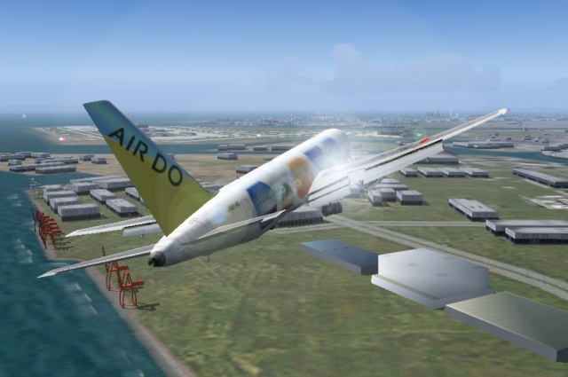

Air Do B767 approaching the Haneda 16L
aircraft data: Project Open Sky Hokkaido Intl AirLines Boeing 767-33A(ER) V3
Click the following pictures, some pictures are expanded.
{kind=link}
Tokyo Wan Aqua-Line
The Aqua-Line and Beechcraft Baron 58 (special edition)
The Keihin industrial area
This picture is the Keihin industrial area from Aqua-Line side.
The buildings of the industrial area are drawn by simplified 3D.
This is consideration for raising a frame rate.
However, the position of a building is reproduced very correctly
so that it may become a landmark in the case of approach.
The lower left object is the man-made island named "Kaze-no-toh".
The Keiyo industrial area
The Keiyo industrial area from chiba city side.
{kind=link}
Tokyo Wan Aqua-Line
I have continued to make this Aqua-Line scenery from 1997. The work until FS2000 had a problem in the design of ramps. It was due to the limit of hidden surface removal processing. The work from FS2002 completely changed the design.
{kind=link}
Aqua-Line Skeleton Model
This is a skeleton model of "Umi-Hotaru".
Click the picture in order to display the multi-side view.
I created Aqua-Line of the latest version by Mr. Seishow's
3D CAD "jam".
Umi-Hotaru
The Aqua-Line just before sunset
Tokyo Bay Scenery 2005 covers the large ranges
from N33:45-E138:45 to N36:55-E141:05 centering on Tokyo Bay.
I think I would like to introduce some screen shots of this scenery.
Lake Ashi-no-ko
Lake Ashi-no-ko is one of the Fuji Five Lakes.
Since the SRTM 3arc/sec is used for the altitude data,
the drawing of the geographical features is realistic
together with the detailed coastline.
Lake Oku-tone
When you fly along with the Tonegawa river from Choshi at the easternmost tip of the Boso Peninsula,
you will arrive at this Lake Okutone.
The Lake Okutone is contained in Tokyo Bay Scenery 2005 of a only private edition.
Izu Peninsula
It is the bird's-eye view from the altitude of 41,000 ft.
In VFR, I think that especially the exact coastline is important
with the geographical feature data of flight simulation.
{kind=link}
Cape Futtsu
They are Cape Futtsu,
the Nippon Steel Kimitsu Works and Aqua-Line
sequentially from this side.
Mikurajima (island)
This picture is the Mikurajima of the Izu Islands.
The circumference of the island is surrounded by the precipitous cliff.